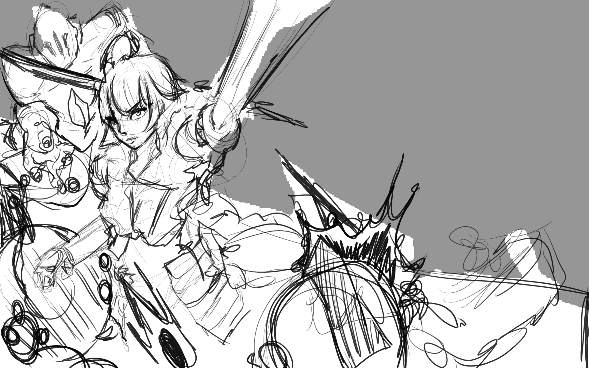
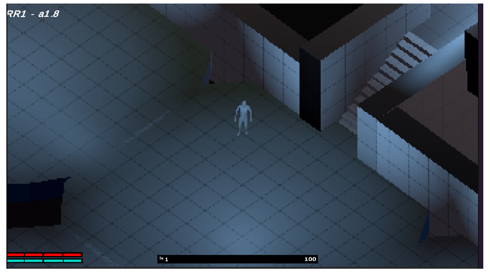

Dead End
Dead Ends is a 2D top-down horror game developed in Unity. The game features a unique art style and atmospheric sound design to create a tense and immersive experience for players. The player takes on the role of a character trapped in a mysterious and dangerous environment, where they must navigate through various obstacles and solve puzzles to escape. With its engaging gameplay and captivating visuals, Dead Ends offers an exciting and thrilling gaming experience for fans of the horror genre.

Rv-3r
The project is developed by myself and a friend of mine, we have a shared passion for games and the creation process and after talking about it more and more we came up with the idea to do an isometric action-adventure game taking influence from 'souls-like's for the combat system rather than using a more western interpretation for stat systems
.jpg)
Unity Random Terrain Generator Tool.
This project is a tool that can create terrain using Perlin noise and a poison disc sampling algorithm for foliage placement.

Hitman Clone
Development of the project was approximately two and half months with the remaining two weeks being used to complete the written assignment The goal for the project was to incorporate ragdoll physics and some sandbox elements into an assassination type game.
Regeneration.
A smaller more simple game that was submitted as part of a game jam with the
theme of 'regeneration'.
The idea I came up with was to have the player constantly lose life unless near generators and the gauge used for
attacking also gets replenished by the generators.